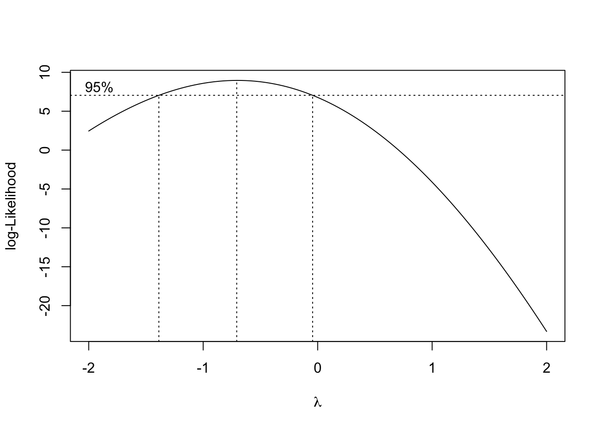
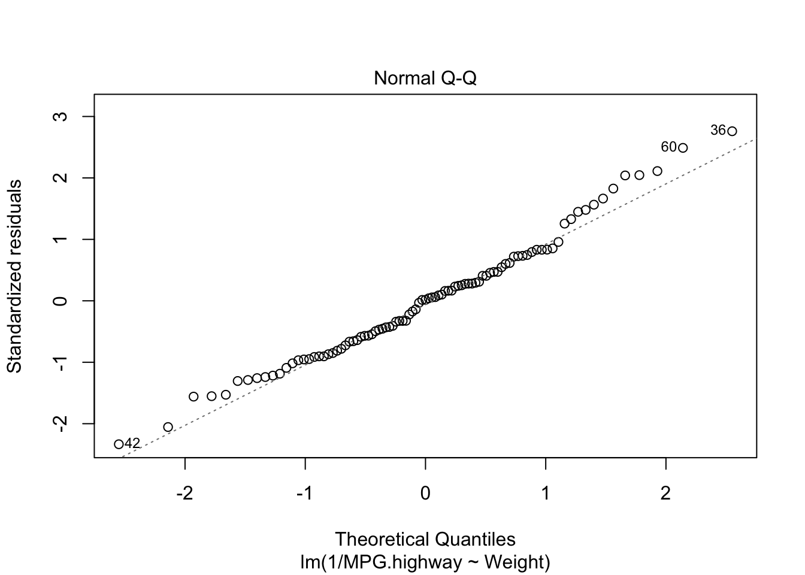
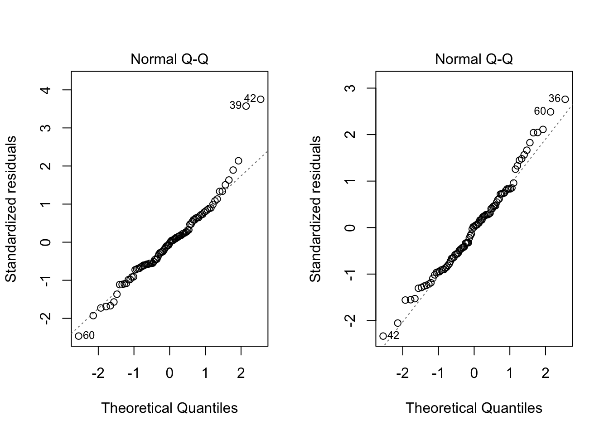
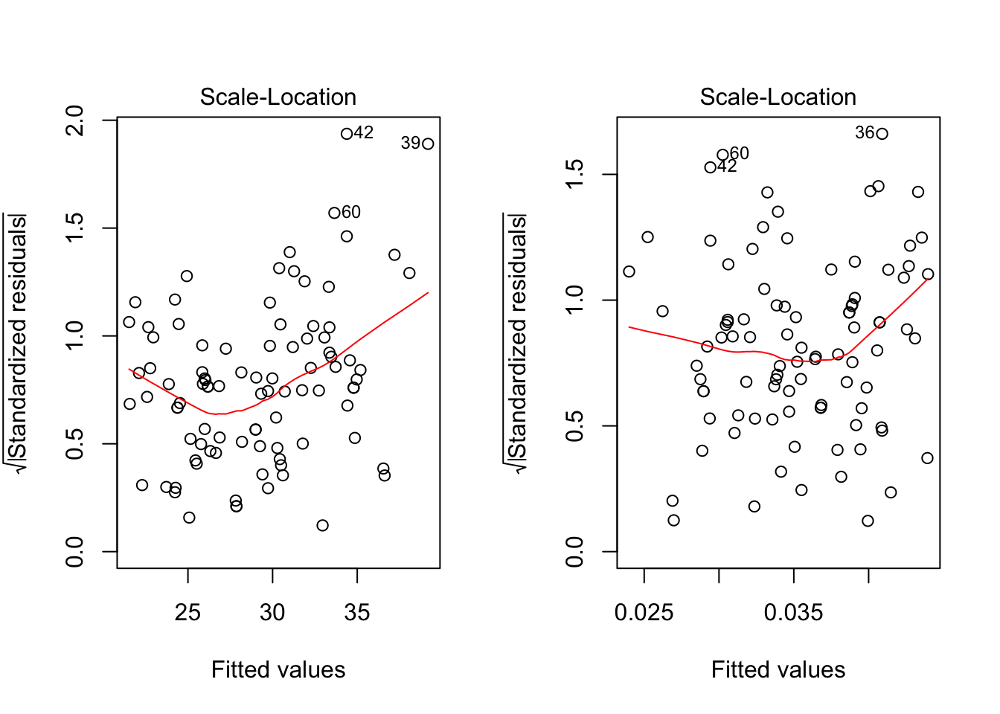

Last updated: 2020-04-09
Checks: 7 0
Knit directory: STA463_Spring_2020/
This reproducible R Markdown analysis was created with workflowr (version 1.4.0). The Checks tab describes the reproducibility checks that were applied when the results were created. The Past versions tab lists the development history.
Great! Since the R Markdown file has been committed to the Git repository, you know the exact version of the code that produced these results.
Great job! The global environment was empty. Objects defined in the global environment can affect the analysis in your R Markdown file in unknown ways. For reproduciblity it’s best to always run the code in an empty environment.
The command set.seed(20200213) was run prior to running the code in the R Markdown file. Setting a seed ensures that any results that rely on randomness, e.g. subsampling or permutations, are reproducible.
Great job! Recording the operating system, R version, and package versions is critical for reproducibility.
Nice! There were no cached chunks for this analysis, so you can be confident that you successfully produced the results during this run.
Great job! Using relative paths to the files within your workflowr project makes it easier to run your code on other machines.
Great! You are using Git for version control. Tracking code development and connecting the code version to the results is critical for reproducibility. The version displayed above was the version of the Git repository at the time these results were generated.
Note that you need to be careful to ensure that all relevant files for the analysis have been committed to Git prior to generating the results (you can use wflow_publish or wflow_git_commit). workflowr only checks the R Markdown file, but you know if there are other scripts or data files that it depends on. Below is the status of the Git repository when the results were generated:
Ignored files:
Ignored: .DS_Store
Ignored: .Rhistory
Ignored: .Rproj.user/
Ignored: lec/
Untracked files:
Untracked: analysis/fit_mr.Rmd
Untracked: docs/figure/fit_mr.Rmd/
Unstaged changes:
Modified: analysis/corona.Rmd
Note that any generated files, e.g. HTML, png, CSS, etc., are not included in this status report because it is ok for generated content to have uncommitted changes.
These are the previous versions of the R Markdown and HTML files. If you’ve configured a remote Git repository (see ?wflow_git_remote), click on the hyperlinks in the table below to view them.
| File | Version | Author | Date | Message |
|---|---|---|---|---|
| Rmd | e5e0b85 | dleelab | 2020-04-10 | added |
| html | 8e09c30 | dleelab | 2020-04-10 | added |
| Rmd | 45fd021 | dleelab | 2020-04-10 | new |
Transformations of the response variable Y can improve the fit and correct violations of model assumptions such as normality and constant error variance.
The Box-Cox transformation method is a popular way to determine a normalizing data transformation for Y.
It is designed for strictly positive responses \((Y > 0)\) and determines the transformation to find the best fit to the data.
In the Box-Cox method, instead of fitting the original Y as the response, we determine a transformed version \(t_{\lambda}(Y)\), where
\[ \begin{aligned} t_{\lambda}(Y)=\left \{\begin{array}{ll} \frac{Y^{\lambda}-1}{\lambda} & \mbox{for } \lambda \neq 0\\ ln Y& \mbox{for } \lambda =0\\ \end{array} \right. \end{aligned} \]
To get the best \(\lambda\) estimate, we calculate the log-likelihood of the data, and find \(\lambda\) that makes the log-likelihood maximum.
After the “power” \(\lambda\) is estiamted. We fit the linear model using the transformed response \[ t_{\lambda}(Y)=\beta_0+\beta_1X_1+\cdots+\beta_kX_k+\epsilon. \]
For \(\lambda=0\) \[ t_{\lambda}(Y)=ln Y=\beta_0+\beta_1X_1+\cdots+\beta_kX_k+\epsilon. \]
For \(\lambda=-1\) \[ t_{\lambda}(Y)=Y^{-1}=\frac{1}{Y}=\beta_0+\beta_1X_1+\cdots+\beta_kX_k+\epsilon. \]
library(MASS)
#Cars93 data MPG.highway(Y), Weight(X)
#1. Diagnostic of predictor variables
attach(Cars93)
fit=lm(MPG.highway~Weight)
bc=boxcox(fit)#in library(MASS)
| Version | Author | Date |
|---|---|---|
| 8e09c30 | dleelab | 2020-04-10 |
#find lambda
bc$x[which.max(bc$y)][1] -0.7070707fit2=lm(1/MPG.highway~Weight)
plot(fit2,which=2)
| Version | Author | Date |
|---|---|---|
| 8e09c30 | dleelab | 2020-04-10 |
par(mfrow=c(1,2))
plot(fit,which=2)
plot(fit2,which=2)
| Version | Author | Date |
|---|---|---|
| 8e09c30 | dleelab | 2020-04-10 |
shapiro.test(fit$residuals) #before
Shapiro-Wilk normality test
data: fit$residuals
W = 0.95223, p-value = 0.001875shapiro.test(fit2$residuals) #after
Shapiro-Wilk normality test
data: fit2$residuals
W = 0.98304, p-value = 0.2707Both the graphical check above and the Shapiro-Wilk test shows the violation of the normality assumption before has been solved. Based on the test result, since the p-value is 0.2707, we can conclude the residuals follow a normal distribution.
library(zoo)
Attaching package: 'zoo'The following objects are masked from 'package:base':
as.Date, as.Date.numericlibrary(lmtest)
par(mfrow=c(1,2))
plot(fit, which=3)
plot(fit2,which=3) 
| Version | Author | Date |
|---|---|---|
| 8e09c30 | dleelab | 2020-04-10 |
bptest(MPG.highway~Weight)
studentized Breusch-Pagan test
data: MPG.highway ~ Weight
BP = 11.495, df = 1, p-value = 0.0006977bptest(1/MPG.highway~Weight)
studentized Breusch-Pagan test
data: 1/MPG.highway ~ Weight
BP = 0.4515, df = 1, p-value = 0.5016Doing the diagnostic check for constant variance, the graphical check shows the non-constant variance situation has been modified. The BP test also shows the residuals have constanct variance (p-value 0.5016). Sometimes problems of non-normality and non-constant variance go hand-in-hand, so treating one problem frequently cures the other. However, this is not always the case.
\[ \frac{1}{Y}=\beta_0+\beta_1X+\epsilon, \] where \(Y\) is highway mpg and \(X\) is car weight.
Regression coefficients will need to be interpreted with respect to the transformed scale.
\(\beta_0\) is the true mean of the reciprocal of highway mpg at \(X=0\) (meaningless in this problem context)
\(\beta_1\) is the change in the true mean of the reciprocal of highway mpg as a car weight increases by 1 pound.
There is no straightforward way of “untransforming” them to values that can interpreted in the original scale.
Even if you transform the response, you can express model predictions back in the original scale.
This is simply a matter of “untransforming” by using the inverse function of the original transformation.
For example, we want to find a 95% PI for a car weighing 2000 lb.
pred=predict(fit2,newdata=data.frame(Weight=2000),int="prediction",level=0.95)
pred fit lwr upr
1 0.02652034 0.01973904 0.033301641/pred fit lwr upr
1 37.70691 50.66102 30.02855We are 95% confident that the true highway mpg for an unobserved individual car weighing 2000 lb is somewhere between 30.03 to 50.66 miles per gallon.
The lower and upper prediction limits in R are switched because of the reciprocal transformation we used.
\[ \begin{eqnarray*} t_{\lambda_1,\lambda_2}(Y)=\left \{\begin{array}{ll} \frac{(Y+\lambda_2)^{\lambda_1}-1}{\lambda_1} & \mbox{for } \lambda_1 \neq 0\\ ln (Y+\lambda_2)& \mbox{for } \lambda_1=0\\ \end{array} \right. \end{eqnarray*} \]
Plastic hardness data, fit \(Y=\beta_0+\beta_1X+\epsilon\).
plastic=read.table("http://users.stat.ufl.edu/~rrandles/sta4210/Rclassnotes/data/textdatasets/KutnerData/Chapter%20%201%20Data%20Sets/CH01PR22.txt")
colnames(plastic)=c("Y","X")
lm(Y~X,data=plastic)
Call:
lm(formula = Y ~ X, data = plastic)
Coefficients:
(Intercept) X
168.600 2.034 lm(Y~X^2,data=plastic)
Call:
lm(formula = Y ~ X^2, data = plastic)
Coefficients:
(Intercept) X
168.600 2.034 What’s wrong with the above result?
Solutions:
Y2=(plastic$Y)^2
X2=(plastic$X)^2
lm(Y~X2,data=plastic)
Call:
lm(formula = Y ~ X2, data = plastic)
Coefficients:
(Intercept) X2
194.88253 0.03551 lm(Y~I(X^2),data=plastic)
Call:
lm(formula = Y ~ I(X^2), data = plastic)
Coefficients:
(Intercept) I(X^2)
194.88253 0.03551
sessionInfo()R version 3.6.1 (2019-07-05)
Platform: x86_64-apple-darwin15.6.0 (64-bit)
Running under: macOS Mojave 10.14.6
Matrix products: default
BLAS: /Library/Frameworks/R.framework/Versions/3.6/Resources/lib/libRblas.0.dylib
LAPACK: /Library/Frameworks/R.framework/Versions/3.6/Resources/lib/libRlapack.dylib
locale:
[1] en_US.UTF-8/en_US.UTF-8/en_US.UTF-8/C/en_US.UTF-8/en_US.UTF-8
attached base packages:
[1] stats graphics grDevices utils datasets methods base
other attached packages:
[1] lmtest_0.9-37 zoo_1.8-6 MASS_7.3-51.4
loaded via a namespace (and not attached):
[1] workflowr_1.4.0 Rcpp_1.0.4.6 lattice_0.20-38 digest_0.6.25
[5] rprojroot_1.3-2 grid_3.6.1 backports_1.1.6 git2r_0.26.1
[9] magrittr_1.5 evaluate_0.14 rlang_0.4.5 stringi_1.4.6
[13] fs_1.4.1 whisker_0.4 rmarkdown_1.15 tools_3.6.1
[17] stringr_1.4.0 glue_1.4.0 xfun_0.12 yaml_2.2.1
[21] compiler_3.6.1 htmltools_0.4.0 knitr_1.28